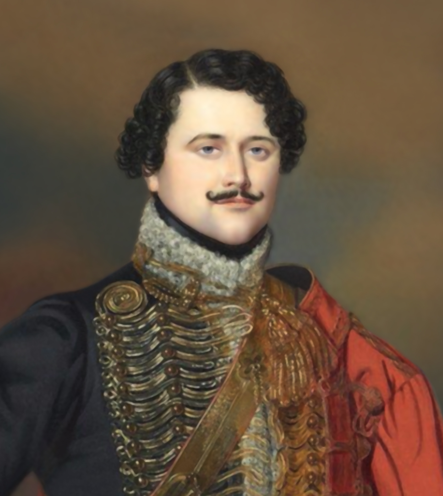
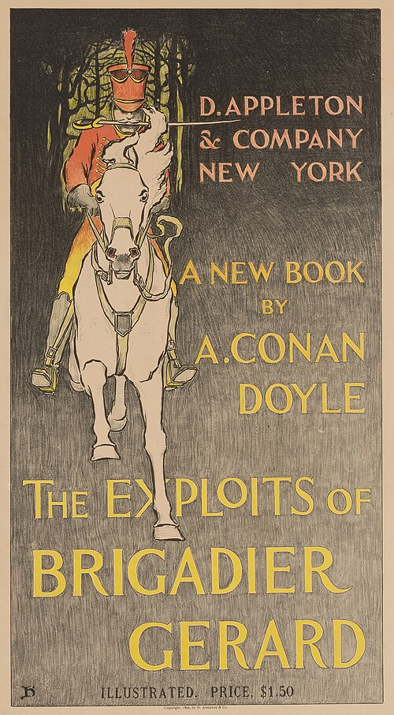
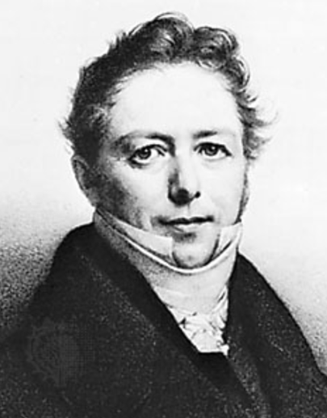
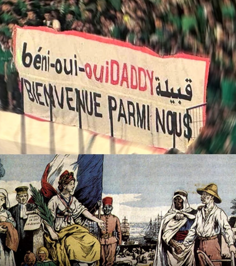

라이프치히 에필로그 (2) - 독재의 폐해
게시: 2026-05-11T06:30:31+09:00
나폴레옹이 라이프치히에서 처절하게 망한 것은 사실 라퐁텐 상병이 너무 일찍 엘스터 다리를 폭파시키던 순간이 아니었습니다. 그건 결과였을 뿐 원인이 아니었지요. 나폴레옹 패망의 결정적인 순간을 고르라고 한다면, 그건 라이프치히 전투 제2일차이던 10월 17일이라고 할 수 있을 것입니다. 그날 나폴레옹이 뭘 했길래 그럴까요? 기억들 하시겠지만 아무것도 하지 않았습니다. 그래서 망한 것입니다. 여러 정황을 보면, 나폴레옹은 10월 16일 첫날 전투에서 마르몽의 제6군단을 제때 남부 전선에 투입하지 못하게 되면서 남부 전선 돌파에 실패했고, 그러면서 사실상 승리의 기회가 날아갔다는 것을 잘 알고 있었습니다. 그는 17일 새벽경에는 탄약 부족 때문에라도 이미 철수 외에는 달리 방법이 없다고 결정했던 것으로 보입니다. 그렇게 결정했다면 당연히 그의 병력들을 어떻게 최소한의 피해로 후퇴시킬지 철저히 준비를 했어야 합니다. 그런데, 정말 신기할 정도로 나폴레옹은 아무것도 하지 않았습니다. 다시 복기해보면, 17일에 후퇴하지 않은 이유는 그날 오후 4시경 도착할 레이니에의 제7군단을 버리고 갈 수 없었기 떄문이었습니다. 그렇다고 해도, 17일 밤~18일 새벽의 야음을 틈타 후퇴하지 않은 것은 정말 이해가 가지 않는 일입니다. 이미 지난 편(https://nasica1.tistory.com/935)에서 설명드린 바와 같이 나폴레옹이 야간 작전을 싫어했기에 그랬을 수 있습니다. 하지만 적어도 17일 하루 동안 아무런 후퇴 준비를 하지 않고 고민만 했다는 것은 아무리 쉴드를 쳐주려 해도 변명의 여지가 없는 일입니다. 나폴레옹은 라이프치히 서쪽 린더나우 일대가 엘스터강과 플라이서강이 얽힌 습지 투성이라 퇴각로는 좁은 둑방길들 뿐이라는 것을 잘 알고 있었고, 따라서 어느 부대가 어느 길로 후퇴할지를 면밀하게 계획서를 작성하고 필요시 추가적인 교량을 건설하는 등의 준비를 갖추어야 했습니다. 그런데 그는 정말 아무것도 하지 않았습니다. 생각해보면 나폴레옹은 그의 긴 군사 경험에 있어서, 20만에 가까운 대군을 한 도시에 모아놓은 경험도 없었고 그런 대군을 적과 대치한 상태에서 하룻밤 사이에 후퇴시켜본 경험도 없었습니다. 모스크바로 진격할 때도 후퇴할 때도, 한 장소에는 10만 정도를 집결시켰던 것이 전부였습니다. 사실 그런 경험은 전체 유럽 역사에서 그 누구도 해보지 못한 것이긴 했습니다. 그러나 모스크바와 베레지나강에서의 철수 작전을 경험해본 그보다 더 경험 많은 사람은 당대 유럽에 없었을 것이고, 당대 최고의 참모인 베르티에와 함께 있으면서도 아무 준비를 하지 않았다는 것은 변명의 여지가 없는 일이었습니다. 대체 왜 10월 17일 아무런 후퇴 준비가 없었는지에 대해서는 당대 사람들도 무척이나 의아하게 생각했습니다. 나폴레옹의 극찬을 받은 회고록을 썼던 마르보(Marcellin Marbot) 대령의 기록에 따르면 마침내 후퇴가 시작될 때 전군은 이미 적절한 곳에 추가 교량들과 후퇴로가 준비되어 있을 거라고 믿었다고 합니다. 각종 기둥과 목재, 밧줄과 못 등 필요 자재를 구할 수 있는 라이프치히 시내를 자신들이 확보하고 있었고, 17일 하루 동안 아무 전투가 없었으므로 임시 교량 여러 개를 준비할 시간이 충분했기 때문입니다. 마르보도 그 이유를 찾기 위해 훗날 회고록을 쓰면서 온갖 기록을 다 뒤져 보고 여러 증인들을 만나 보았으나 아무런 단서를 찾지 못했습니다. 다만, 마르보가 기록하기를, 펠레(Pelet)라는 장군의 1828년 증언에 따르면 오디에(Odier)라는 이름의 근위대 소속 병참관이 말하는 것을 들었는데, 나폴레옹이 그의 참모였던 모 장군에게 후퇴를 위한 교량 건설을 지시하는 자리에 오디에 본인이 있었다고 합니다. 그러니까 나폴레옹이 라이프치히에서 결정적으로 패망한 이유는 오로지 그 이름 몰를 참모 장군 때문이라는 주장입니다. 다만 마르보의 평가에 따르면 펠레는 열성적인 보나파르트주의자(Bonapartist)였으므로 그의 증언을 100% 다 믿기는 어려우며, 그 작업 지시를 나폴레옹으로부터 받은 장군이 누구인지는 펠레 본인도 밝히려 하지 않았다고 합니다.

(마르보의 회고록은 세인트헬레나 섬에 있던 나폴레옹이 마르보에게 10만 프랑의 유산을 남길 정도로 나폴레옹의 극찬을 받았으며, 사실 그래서 그 내용의 신빙성이 약간 떨어진다고 평가받기도 합니다. 그래도 그의 글은 재미 측면에서는 매우 뛰어나, 많은 이들의 사랑을 받았습니다. 특히 그의 용맹한 애마 리제뜨(Lisette)가 1809년 아일라우 전투에서 2명의 러시아군을 물어뜯고 짓밟아 죽이고 마르보를 구한 이야기는 유명합니다.)

(셜록 홈즈의 작가인 코난 도일도 그의 팬이라서 마르보와 그의 모험담을 기반으로 '제라르 준장'(Brigadier Gerard)이라는 군인 모험담 단편 시리즈물을 쓰기도 했습니다.) 나폴레옹이 후퇴를 위한 교량 건설을 분명히 지시했다고 기록한 사람들 중에는 나폴레옹의 제1비서였던 펭(Agathon Jean François Fain) 남작도 있습니다. 실제로 나폴레옹이 그런 지시를 내렸다고 하더라도, 결국 나폴레옹은 아무런 조치가 이루어지지 않은 것에 대해 부하들 탓을 할 수는 없습니다. 축구로 따지면 선수들에게 골을 넣으라고 지시했는데 선수들이 무능력해서 골을 못 넣었다는 것이 감독의 패배 변명이 될 수 없기 떄문입니다. 다리를 놓으라는 지시를 제대로 내리기 위해서는 구체적인 담당자를 지정하고 책임과 권한을 줘야 합니다. 구체적인 지시 없이 '알아서들 다리를 놓으라'고 던지듯 말하는 것은 결코 책임 있는 사령관의 모습이 아닙니다.

(펭 남작은 1806년부터 나폴레옹의 비서로 근무하며 점차 그의 눈에 들어 1809년에 남작에 봉해졌습니다. 그는 나폴레옹이 가장 신임하는 비서로서 1814년 그가 퇴위할 때까지 거의 언제나 나폴레옹과 함께 했습니다. 그의 기록에 따르면 나폴레옹은 정말 심각한 워커홀릭으로서, 그의 비서들은 정말 죽을 고생을 다했다고 합니다만, 뭐 언제나 모든 사람에게는 자기 일이 가장 힘든 법이지요. 그는 여러 권의 기록을 남겼는데, 그 중 '1814년의 원고(Manuscrit de l'an 1814)'는 1815년 워털루 전투 당시 나폴레옹의 마차 안에 남아있던 것을 영국군이 탈취했다가 나중에 펭이 어렵게 되찾아서 출판했다는 일화가 전해집니다.) 마르보가 내린 결론은 베르티에가 라이프치히 대참사의 원흉이라 것입니다. 나폴레옹은 원래 약간 중2병 증세가 있는 몽상가로서 그의 역할은 큰 그림을 그리고 그걸 밀어붙이는 추진력을 발휘하는 것이었지 사단장 여단장 하나하나에게까지 상세한 작전 명령서를 써주는 것이 아니었습니다. 그런 업무는 바로 총참모장인 베르티에가 총괄해야 했습니다. 대부분의 군단장이나 사단장들은 감히 나폴레옹과 직접 교신을 하지도 못했고 모두 베르티에를 거쳐야 했습니다. 마르보의 분노에 찬 기록에 따르면, 실제로 여러 장군들이 베르티에에게 그런 퇴각로 확보 및 추가 교량 건설을 건의했었다고 합니다. 그러나 그럴 때마다 베르티에의 답변은 그저 "폐하께서 명령하지 않으셨네" (L'Empereur ne l'avait pas ordonné)라며 거절했다는 것입니다. 대체 베르티에는 왜 그랬을까요? 마르보의 서술에 따르면 베르티에는 일이 잘 풀리지 않을 때 나폴레옹이 참지 못하고 터뜨린 중2병적인 성질머리에 몇 번 크게 혼이 난 뒤부터 나폴레옹을 크게 두려워하게 되어, 자기 스스로 뭔가 일을 추진할 생각을 모두 버리고 오로지 나폴레옹의 명령만 기계적으로 수행하는 예스맨이 되어 있었습니다. 그 결과, 나폴레옹은 베르티에와 일하는 것을 매우 편하게 생각하며 만족스러워 했지만 결국 그랑다르메 전체에게는 재앙이 되었다고 마르보는 개탄했습니다. 결국 나폴레옹은 자기 무덤을 자기가 판 셈이었습니다. 독재라는 것이 그래서 안 좋은 것입니다. 나폴레옹 같은 천재조차도 독재라는 덫을 피해가지는 못했으니까요.

(베르티에 같은 인물은 우리 말로도 그냥 예스맨(Yes man)이라고 부르지요. 프랑스어로는 뭐라고 할까요? 가장 흔하게 쓰이는 표현은 Béni-oui-oui (베니-위-위)랍니다. 흥미롭게도, 이 표현은 프랑스 식민지였던 알제리에서 생겨난 표현이라고 합니다. 베니(Béni)는 아랍어로 '~의 아들'이라는 뜻이라고 하고, 위(oui)는 불어로 yes입니다. 그러니까 알제리에서는 우리나라 친일파 같은 사람들을 베니위위라고 불렀는데, 그 표현이 프랑스로 역수입된 셈입니다. 저 현수막에 쓰인 BIENVENUE PARMI NOUS (비엥브늬 파르미 누)는 "우리 사이에 온 것을 환영한다"는 야유입니다.) 패배한 나폴레옹 측에 이런 책임 공방이 있는 것처럼, 승리한 연합군 측에도 서로간에 손가락질을 할 일이 있었습니다. 나폴레옹은 한때 라이프치히에 거의 완전히 포위되어 있었습니다. 왜 연합군은 여기서 전쟁을 끝내지 못하고 반년 가까이 더 전쟁을 끌며 더 많은 희생자를 내야 했을까요? Source : The Life of Napoleon Bonaparte, by William Milligan Sloane Napoleon and the Struggle for Germany, by Leggiere, Michael V With Napoleon's Guns by Colonel Jean-Nicolas-Auguste Noël https://www.historyofwar.org/articles/battles_leipzig_19_october.html https://warhistory.org/@msw/article/leipzig-battle-of-the-nations https://www.encyclopedia.com/history/encyclopedias-almanacs-transcripts-and-maps/leipzig-battle-0 https://warfarehistorynetwork.com/article/death-knell-for-napoleons-empire/ https://www.napoleon-series.org/military-info/battles/leipzig/c_leipzigoob10.html http://napoleonistyka.atspace.com/Leipzig_battle_of_the_Nations.htm https://pastnow.wordpress.com/2013/10/19/october-19-1813-disastrous-retreat/ https://en.wikipedia.org/wiki/Marcellin_Marbot https://en.wikipedia.org/wiki/Brigadier_Gerard https://en.wikipedia.org/wiki/Agathon_Jean_Fran%C3%A7ois_Fain https://fr.wikipedia.org/wiki/B%C3%A9ni-oui-oui https://www.instagram.com/p/DQcQW74iFDk/